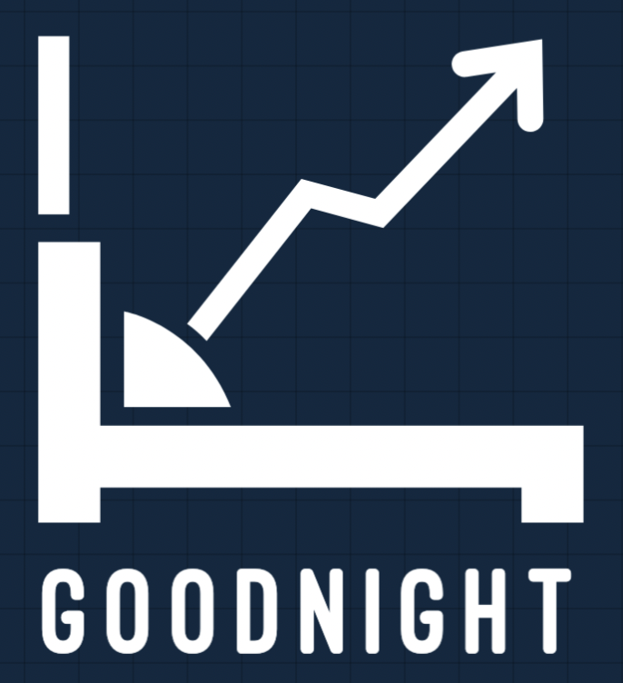
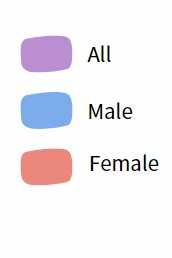
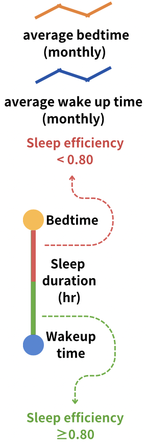

Goodnight
The age range you want to view data for
All
Under 20 years old
21-30 years old
31 years old-40 years old
Over 40 years old
Gender
Smoking Status
Exercise Frequency
Alcohol Consumption
Caffeine Consumption

